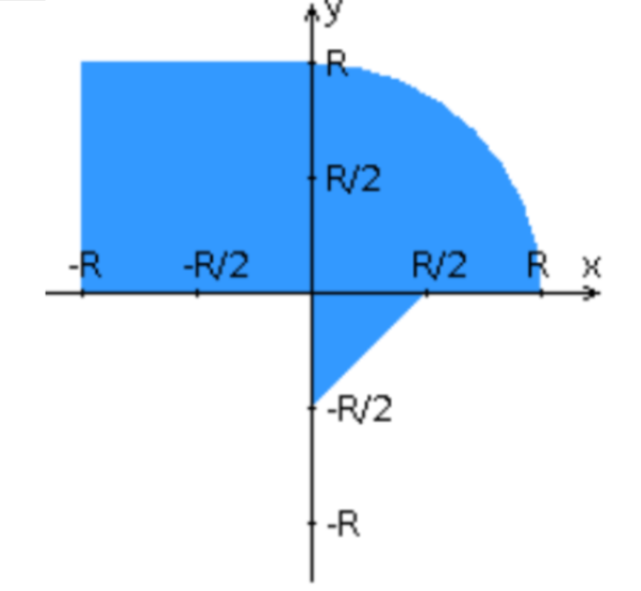

Завдання лабороторної роботи
Необхідно написати проект на фремворку Angular, який визначає потрапляння крапки на координатній площині в задану область чи ні відповідно до варіанту завдань, і вміщує HTML-сторінку, яка формує дані для відправки їх на обробку
